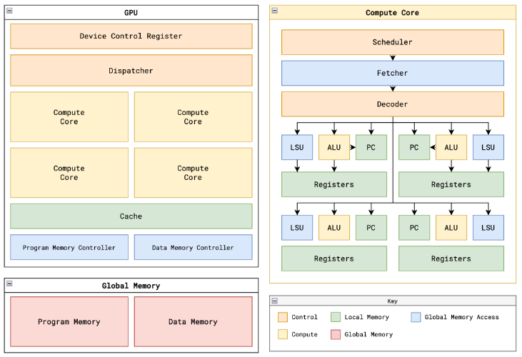
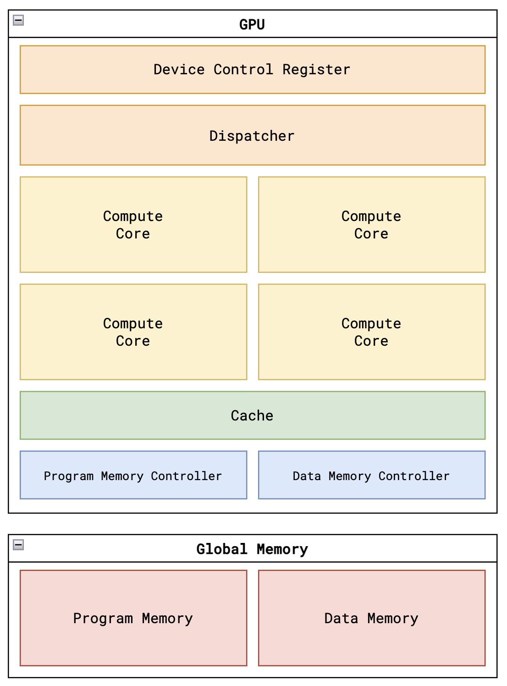
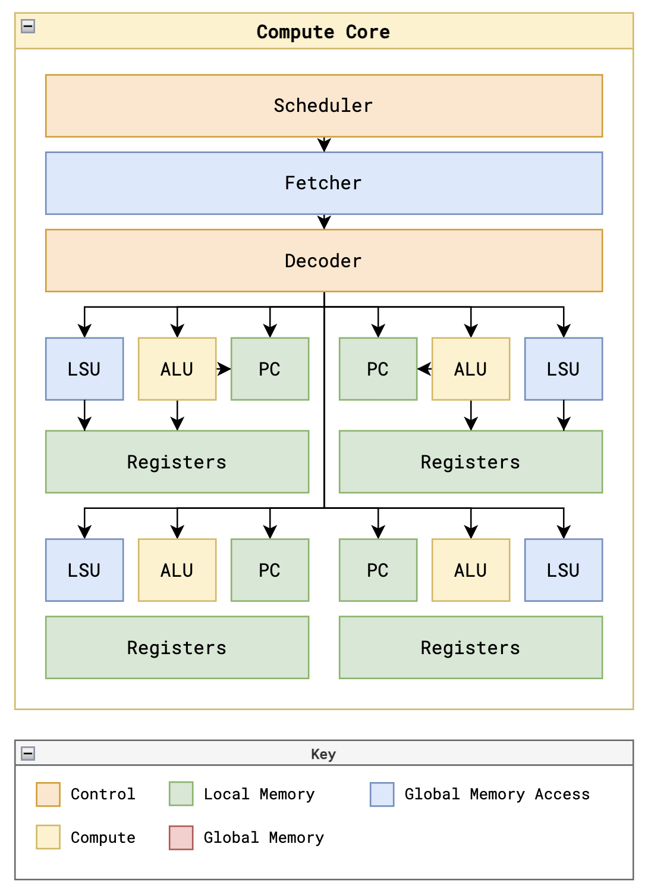
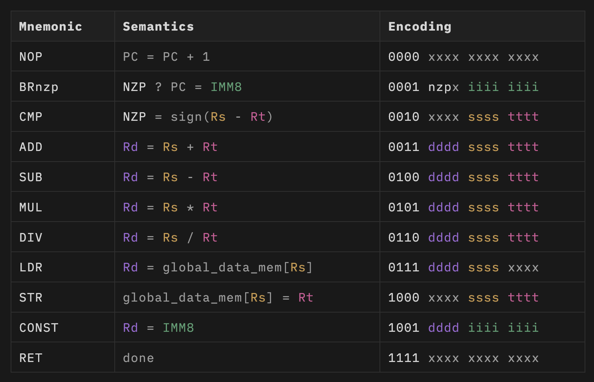
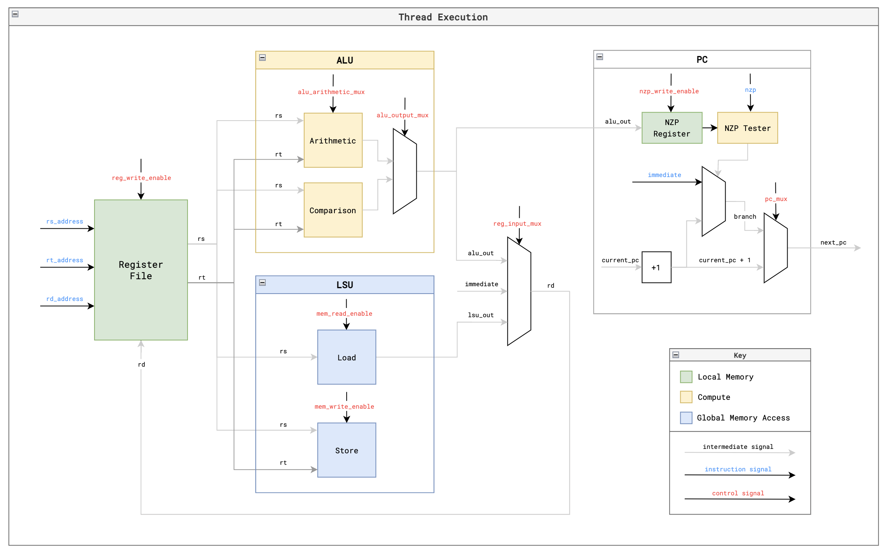

Tiny-gpu
Introduction
Tiny-gpu是一个轻量级的 GPU 模型，专为帮助用户从头开始理解 GPU 的工作原理而设计。这是最简单的开源gpgpu项目，适合gpu入门学习。
项目主要侧重于探索以下方面
- 架构 (Architecture)：GPU 的架构是什么样的？哪些元素最重要?
- 并行化 (Parallelization)：如何在硬件中实现 SIMD 编程模型？
- 内存 (Memory)：GPU 如何应对内存带宽有限的限制？
Tiny-gpu简化了执行流程，一次仅处理一个内核 (kernel)。
启动内核的步骤如下
- 加载全局程序内存：将内核代码加载到全局程序内存中。
- 加载数据内存：将必需的数据加载到数据内存中。
- 指定线程数量：在设备控制寄存器中指定要启动的线程数量。
- 启动内核：将启动信号设置为高电平，启动内核执行。
Architecture
  Tiny-gpu 本身包含以下单元：
- 设备控制寄存器：用于存储线程数量等控制信息。
- 调度器 (Dispatcher)：负责将任务分配给各个计算核心。
- 可变数量的计算核心：执行内核代码的处理器单元，数量可根据设计灵活配置。
- 内存控制器：分别用于控制数据内存和程序内存的访问。
- 缓存 (Cache)：用于减少对主内存的访问次数，提高数据读取速度（可能不是所有 tiny-gpu 版本都包含）。
设备控制寄存器
设备控制寄存器通常用于存储描述内核执行方式的元数据。在 tiny-gpu 中，它只存储一个值：线程数量 (thread_count)，即待激活内核需要启动的线程总数。
调度器
内核启动后，调度器负责将线程分配给不同的计算核心。调度器会将线程组织成块 (block)，这些线程块可以并行地在单个核心上执行。然后，调度器将线程块发送给可用的计算核心进行处理。当所有线程块处理完成后，调度器会报告内核执行完毕。
计算核心
每个核心都包含一定数量的计算资源，通常围绕着它可以支持的线程数量进行设计。为了最大化并行化，需要最佳管理这些资源以提高资源利用率。 在简化后的 tiny-gpu 中，每个核心一次处理一个线程块 (block)。为每个线程块中的线程，核心都配备了专用的 ALU、LSU、PC 和寄存器文件。管理这些资源执行线程指令是 GPU 中最具挑战性的问题之一。
内存控制器
全局内存具有固定的读写带宽，但是所有计算核心访问内存的数据请求可能会远远超出外部内存的实际处理能力。
内存控制器负责跟踪来自计算核心的所有传出内存请求，根据实际外部内存带宽限制请求，并将外部内存的响应传递回相应的资源。
每个内存控制器根据全局内存的带宽配置了固定数量的通道。
缓存
全局内存中的相同数据经常被多个计算核心请求。反复访问全局内存代价很高，因为数据已经获取过一次，所以将数据存储在设备上的 SRAM 中以便稍后更快地检索会更有效。
这就是缓存的作用。从外部内存检索到的数据会存储在缓存中，以后的请求可以直接从缓存中读取，从而释放内存带宽用于处理新数据。
Core

每个核心都包含一定数量的计算资源，通常围绕着它可以支持的线程数量进行设计。为了最大化并行化，需要最佳管理这些资源以提高资源利用率。
在简化后的 tiny-gpu 中，每个核心一次处理一个线程块 (block)。为每个线程块中的线程，核心都配备了专用的 ALU、LSU、PC 和寄存器文件。管理这些资源执行线程指令是 GPU 中最具挑战性的问题之一。
Schedule
每个核心都有一个调度器，负责管理线程的执行。 tiny-gpu 的调度器会顺序执行一个线程块中的所有线程指令，直到完成，然后再拾取一个新的线程块。它以同步的方式依次执行所有线程的指令。 在更高级的调度器中，会使用流水线 (pipelining) 等技术来流式执行后续指令，在先前指令完全完成之前最大化资源利用率。此外，还可以使用波形调度 (warp scheduling) 并行执行线程块内的多个线程批次。 调度器需要解决的主要限制是与从全局内存加载和存储数据相关的延迟。虽然大多数指令可以同步执行，但这些加载/存储操作是异步的，这意味着指令执行的其余部分必须围绕这些较长的等待时间进行构建。
Fetch
异步地从程序内存中提取当前程序计数器指向的指令（通常在执行完一个线程块后应该从缓存中提取）。
Decode
将提取的指令解码成控制线程执行的控制信号。
RF
每个线程都有自己专用的寄存器文件。寄存器文件保存每个线程执行计算的数据，从而实现相同指令多数据 (SIMD) 模式。
值得注意的是，每个寄存器文件都包含一些只读寄存器，其中存储有关正在局部执行的当前线程块和线程的数据，使内核能够基于局部线程 ID 使用不同的数据执行。
ALU
每个线程的专用算术逻辑单元用于执行计算。处理加法 (ADD)、减法 (SUB)、乘法 (MUL)、除法 (DIV) 等算术指令。 还处理比较指令 (CMP)，该指令实际上输出两个寄存器差值是负数、零还是正数的结果，并将结果存储在 PC 单元中的 NZP 寄存器中。
LSU
每个线程的专用加载存储单元用于访问全局数据内存。 处理加载 (LDR) 和存储 (STR) 指令，并处理内存请求被内存控制器处理和中继的异步等待时间。
PC
每个单元的专用程序计数器用于确定每个线程接下来要执行的指令。
默认情况下，PC 在每个指令后递增 1。
使用分支指令 (BRnzp)，NZP 寄存器会检查 NZP 寄存器（由先前的 CMP 指令设置）是否匹配某些情况 - 如果匹配，它将跳转到程序内存的特定行。这就是循环和条件语句的实现方式。
由于线程并行处理，tiny-gpu 假设所有线程在每个指令后都“收敛”到相同的程序计数器 - 这为了简化起见，是一个近似假设。
在真正的GPU中，单个线程可以跳转到不同的 PC，导致分支分歧 (branch divergence)，即最初一起处理的一组线程必须分裂成单独的执行部分。
Memory
GPU 通常连接外部全局内存进行数据交互。为了简化设计，tiny-gpu 将数据内存和程序内存分开存放。
全局内存
tiny-gpu数据内存具有以下规格 8 位寻址 (总共256行数据) 8 位数据 (每行存储小于 256 的值)
tiny-gpu程序内存具有以下规格 8 位寻址 (256行程序内存) 16 位数据 (根据指令集规定，每条指令为 16 位)
控制器
全局内存具有固定的读写带宽，但是所有计算核心访问内存的数据请求可能会远远超出外部内存的实际处理能力。 内存控制器负责跟踪来自计算核心的所有传出内存请求，根据实际外部内存带宽限制请求，并将外部内存的响应传递回相应的资源。 每个内存控制器根据全局内存的带宽配置了固定数量的通道。
存储
全局内存中的相同数据经常被多个计算核心请求。反复访问全局内存代价很高，因为数据已经获取过一次，所以将数据存储在设备上的 SRAM 中以便稍后更快地检索会更有效。 这就是缓存的作用。从外部内存检索到的数据会存储在缓存中，以后的请求可以直接从缓存中读取，从而释放内存带宽用于处理新数据。
ISA
tiny-gpu 实现了一套简单的 11 条指令的指令集架构 (ISA)，在支持用于概念验证的简单内核，例如矩阵加法和矩阵乘法。

实现这些功能，tiny-gpu 支持以下指令
BRnzp (分支指令) - 如果 NZP 寄存器值满足指令中指定的 nzp 条件，则跳转到程序内存中的另一行。
CMP (比较指令) - 比较两个寄存器中的值，并将结果存储在 NZP 寄存器中，供后续的 BRnzp 指令使用。
ADD、SUB、MUL、DIV (基本算术运算) - 支持张量运算的基本算术操作。
LDR (加载指令)- 从全局内存中加载数据。
STR (存储指令) - 将数据存储到全局内存中。
CONST (常量加载指令) - 将常量值加载到寄存器中。
RET (返回指令) - 表示当前线程已执行完毕。
每个寄存器由4位指定，意味着共有16个寄存器。前13个寄存器 R0-R12 是可读写的通用寄存器。最后 3 个寄存器是特殊的只读寄存器，用于提供对 SIMD 关键的 %blockIdx、%blockDim 和 %threadIdx 值。
Exe
启动内核
每个核心遵循以下控制流，通过不同的阶段来执行每个指令：
-
获取 (FETCH)：从程序内存中获取当前程序计数器指向的下一条指令。 -
解码 (DECODE)：将指令解码成控制信号。 -
请求 (REQUEST)：如果是加载 (LDR) 或存储 (STR) 指令，则需要从全局内存中请求数据。 -
等待 (WAIT)：如果适用，等待来自全局内存的数据。 -
执行 (EXECUTE)：对数据执行任何计算。 -
更新 (UPDATE)：更新寄存器文件和 NZP 寄存器。
简化理解，控制流程被这样划分开来。 实际上，为了优化处理时间，其中几个步骤可以被压缩。GPU 还可以使用流水线 (pipelining) 技术在核心资源上流式协调执行许多指令，而无需等待先前指令完成。
线程执行
在每个核心内的每个线程都会遵循上述执行路径，对其专用寄存器文件中的数据执行计算。 这类似于标准的 CPU 架构图，在功能上也相当相似。主要区别在于每个线程的只读寄存器中包含 %blockIdx、%blockDim 和 %threadIdx 值，从而实现 SIMD 功能。 
Simulation
tiny-gpu 可以模拟上述两种内核的执行。在进行模拟之前，您需要安装 iverilog 和 cocotb。
安装完先决条件后，您可以使用 make test_matadd 和 make test_matmul 运行内核模拟。
执行模拟将在 test/logs 中输出一个日志文件，其中包含初始数据内存状态、内核的完整执行跟踪以及最终数据内存状态。
如果您查看每个日志文件开头记录的初始数据内存状态，您应该会看到用于计算的两个起始矩阵，并且在文件末尾的最终数据内存中，您还应该会看到结果矩阵。
To do
tiny-gpu 省略了许多现代 GPU 中实现的额外功能，这些功能可以大大提高性能和功能。本节将讨论其中一些最关键的特性。
多级缓存和共享内存
在现代 GPU 中，使用多个不同级别的缓存来最小化需要从全局内存访问的数据量。tiny-gpu 只在请求内存的单个计算单元和存储最近缓存数据的内存控制器之间实现了一个缓存层。
实现多级缓存允许将经常访问的数据更本地地缓存到其使用位置（某些缓存位于单个计算核心内），从而最小化此数据的加载时间。不同的缓存算法用于最大化缓存命中率 - 这是一个可以通过优化内存访问来改善的关键方面。
此外，GPU 经常使用共享内存，使同一块中的线程可以访问单个内存空间，该空间可以用来与其他线程共享结果。
内存合并
GPU 使用的另一个关键内存优化是内存合并。并行运行的多个线程通常需要访问内存中的连续地址（例如，一组线程访问矩阵中的相邻元素），但是每个内存请求都单独提交。
内存合并用于分析排队的内存请求并将相邻请求合并成单个事务，从而最大限度地减少寻址时间并一起发出所有请求。
流水线
在 tiny-gpu 的控制流中，内核会在对一组线程执行一条指令后才开始执行下一条指令。
现代 GPU 使用流水线来一次流式执行多个顺序指令，同时确保相互依赖的指令仍然按顺序执行。这有助于最大化内核内的资源利用率，因为资源不会在等待时闲置（例如：异步内存请求期间）。
波形调度
另一种用于最大化资源利用率的策略是波形调度。这种方法涉及将块分解成可以一起执行的单独线程批处理。可以在单个核心上同时执行多个波形，方法是在一个波形等待时从另一个波形执行指令。这类似于流水线，但处理来自不同线程的指令。
分支分歧
tiny-gpu 假设单个批处理中的所有线程在每个指令后都最终位于相同的 PC 上，这意味着线程可以并行执行其整个生命周期。
实际上，单个线程可以相互分歧并根据其数据分支到不同的行。使用不同的 PC，这些线程需要拆分成本质上不同的执行线路，这需要管理发散的线程并注意线程何时再次收敛。
同步和屏障
现代 GPU 的另一个核心功能是能够设置屏障，以便块中的线程组可以同步并等待同一块中的所有其他线程到达某个点然后再继续执行。 这对于线程需要相互交换共享数据的情况很有用，因此它们可以确保数据已完全处理。